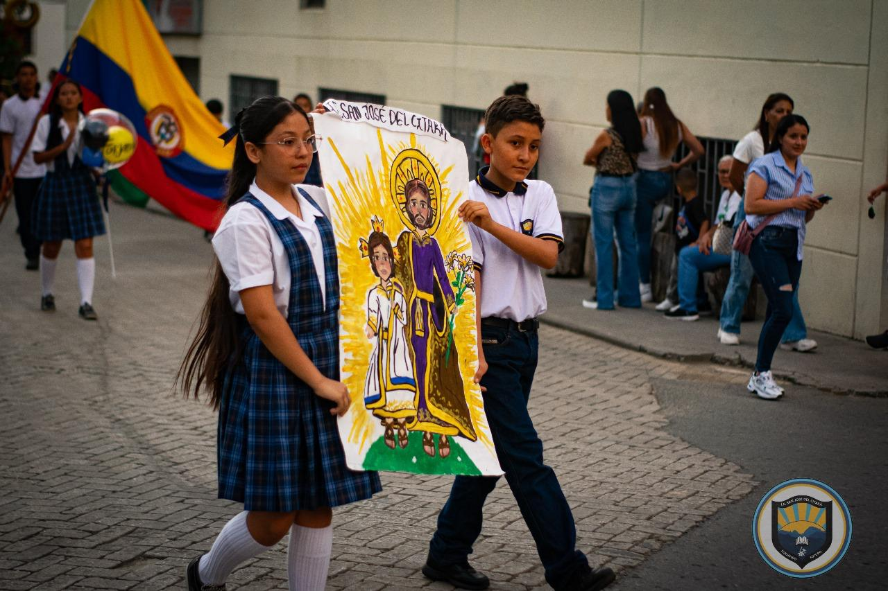
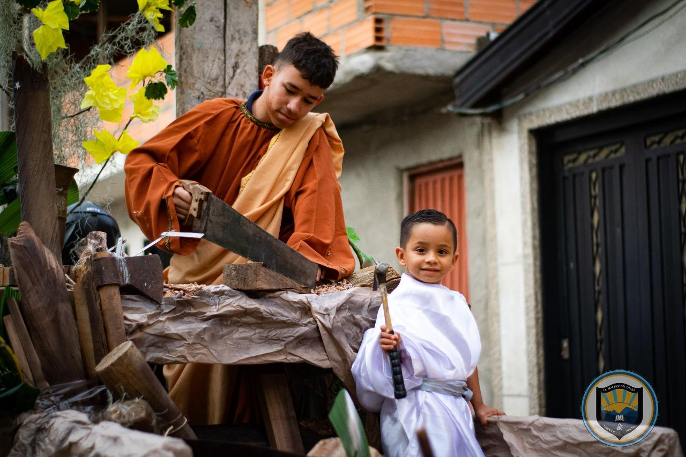

Promover el bienestar integral de la comunidad educativa a través de acciones formativas, solidarias y pastorales que fortalezcan la empatía, la sana convivencia, la espiritualidad y el compromiso social, contribuyendo a la construcción de una cultura de paz y solidaridad en el entorno escolar.
Actividades para el manejo de emociones, resolución pacífica de conflictos, prevención del acoso escolar y promoción del respeto mutuo.
Se desarrollarán encuentros de diálogo y talleres de habilidades sociales para fomentar la empatía, la comunicación asertiva y el respeto por la diversidad.
A través de dinámicas grupales y campañas institucionales se promoverá el cuidado mutuo, la prevención del bullying y el fortalecimiento de la confianza entre pares.
Campañas de ayuda a comunidades vulnerables, jornadas ecológicas y acciones de voluntariado inspiradas en valores cristianos.
Acciones cotidianas de amabilidad, colaboración y gratitud que fortalezcan la convivencia y la cultura del bien común.
Organización de jornadas de solidaridad, recolección de alimentos y ropa, y visitas a comunidades vulnerables, reforzando el valor del servicio y la compasión.
Espacios de oración, reflexión, acompañamiento espiritual y celebraciones que fortalezcan la fe, la esperanza y la fraternidad.
Espacios de formación en virtudes y valores cristianos, articulados con la vida escolar y familiar, para inspirar decisiones éticas y responsables.
Celebraciones litúrgicas, convivencias y acompañamiento pastoral que fortalezcan la fe y el compromiso con una vida de servicio y esperanza.